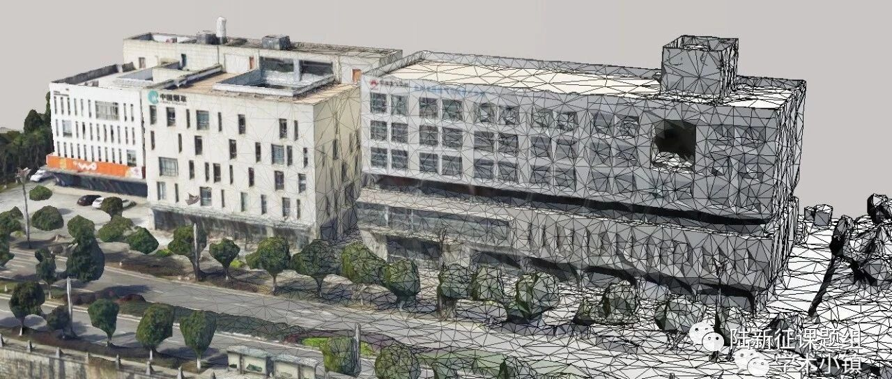

新论文：利用无人机倾斜摄影测量提升城市震害可视化效果
以下文章来源于学术小镇 ，作者许镇、吴元等

北科大许镇老师的公众号
本文转载自许镇博士的公众号“学术小镇”
导语
将城市震害分析结果以一种三维、高真实感、动态的方式展示出来，将更容易被人们理解和接受，可以更好地服务地震安全教育、应急演练等。
“学术小镇”最近发表了一篇论文，利用倾斜摄影技术实现了城市级别的、高真实感的震害过程动态可视化。
Part.1 为何做城市震害可视化？
一直以来，怎么才能组织一次有效的地震应急演习是一个老大难的问题。平时的应急疏散演习缺乏灾害的真实感，很容易流于形式，大家纷纷表示严肃不起来呀~

某幼儿园的应急演习（穿红衣服的小帅哥甚至乐开了花~）
随着虚拟现实技术的蓬勃发展，通过计算机构建高真实感的虚拟灾害场景，在虚拟场景中体验灾害、模拟疏散或救援成为了地震应急演练的新选择。
说到灾害场景的真实感，好莱坞电影是高手。然而，电影侧重于人的感官刺激，往往不能严谨地考虑灾害规律和致灾机理，导致“好看，但不中用”。
例如，电影《San Andreas》，中文名《末日崩塌》，描绘了美国加州San Andreas断层引发的超级地震的情景。下图展示了摩天大楼像散了架一般倒塌，画面很刺激。但考虑到摩天大楼常见的结构形式和抗震要求，出现倒塌的概率其实并不高，而且即使倒塌也未必如画面中这般稀碎。

这么看来，怎么构建一个又要合理、有依据、还要有真实感的城市地震灾害情景，还真是挺值得思考的事儿。
Part.2 那我们是怎么做的？
我们使用倾斜摄影测量作为城市三维建模方案，结合建筑地震时程响应结果，实现一整个城市的地震情景可视化。
整套方案包括三个关键步骤：模型轻量化、建筑物单体化以及动态可视化。

Part.3 当当当！敲黑板！重点来了！
01
城市模型怎么建？
我们使用了一种叫做「倾斜摄影测量」的技术实现城市的自动化建模。一言以蔽之，就是从航拍图片中提取物体的几何信息。

但是，一个城市的航拍数据实在是太！多！了！一个8 k㎡的县城就有400 GB的航拍数据，光是建模就得一个来月，渲染起来电脑更是吃不消呀！

为此，我们提出了三个关键方法，以解决“卡脖子”的轻量化问题。
我们发现，适当地降低一些航拍数据的密度，模型精度并不会有太大的影响，而且可以酌情去除一些城市边缘的数据。这样，大幅减少了要处理的数据量。

数据抽稀的过程嘛，就像这样……
一台电脑的计算能力毕竟是有限的，那么多用几台呢？局域网内的计算机各自分工，数据吞吐能力强的主机负责分配任务、汇总数据，计算性能强大的节点负责三维建模、返回成果。建模效率将成倍提高。

对于城市级别的大模型，每栋建筑物的细部结构可以适当简化。通过使用较低的LOD，模型虽然简化了，但是从远处看并没有什么区别。经过对比，低LOD模型的三角面片数量仅是原来的5%，极大地减小了渲染的负荷


02
地震响应怎么算？
我们采用清华大学陆新征教授提出的结构多自由度模型（MDOF model）对建筑群开展地震弹塑性时程分析。
该模型建模便捷、计算效率高，且经过实际震害的验证，具有较好的准确性，已经广泛应用在国内外多个城市的震害模拟中，包括北京、西安、太原、唐山以及美国旧金山湾区等。

MDOF模型示意，很像“糖葫芦”
03
三维模型怎么动？
倾斜摄影模型本质上是由三角面片组成的，要让其中的建筑“动起来”，首先要将它们从整体模型中分离。分离之后就可以对建筑物单独操作啦。

由于震害分析采用的是层模型，需要将层的时程计算结果插值到三维建筑模型中。我们使用开源图形引擎OpenSceneGraph，利用Callback（回调）机制更新每一时刻建筑物的变形情况，让建筑物三维模型动了起来。

Part.4 应用案例
2008年5月12日，我国四川汶川发生了8.0级地震，北川羌族自治县为汶川大地震中受灾最严重的区域之一。新北川县城——永昌镇是“5·12”特大地震后唯一整体异地搬迁的县城。
我们利用本文方法实现了新北川县城的震害过程高真实度展示。
城市尺度的地震响应可视化
社区尺度的地震响应可视化
单体尺度的地震响应可视化
建筑物在地震的作用下晃来晃去，好吓人呀！这种结果可信吗？
首先，以上视频中建筑晃动的位移都是放大的。其次，我们用可视化结果与精细有限元模拟结果进行了对比验证，两者的结果是吻合的！
因此，可视化结果是靠得住的。

对比验证
（左：可视化模拟结果；右：有限元模拟结果）
为了能够指导人员在地震下的安全应急行为，我们还分别计算了同一栋建筑物在常遇地震、设防地震与罕遇地震（也就是小震、中震，大震）时的最大位移状态（放大50倍）。

小震时的最大位移状态

中震时的最大位移状态

大震时的最大位移状态
根据我国抗震设计规范，小震和中震在50年内超越概率分别为63％和10％。这两种地震出现的可能性比较大，但从上图可以看出，建筑物对应的变形却不大，因此，建筑里的人不必惊慌或急于跑到外面。
大震在50年内有2-3％的超越概率，发生的概率并不高。从上图中也可以看出，尽管建筑在大震中的变形较大，但没有倒塌，因此室内人员仍有安全避难的机会，但需要采取合理的应急措施，如美国推荐的“Drop, Cover and Hold on”原则, 也就是蹲下（或趴下）、掩盖身体和抓牢，以避免大变形引起的非结构灾害。
本文的可视化可以帮助居住者理解不同地震强度引起的建筑响应，从而有助于地震应急安全行动的决策。
Part.5 结语
本研究提出了一种基于倾斜摄影测量技术的城市建筑群地震响应高真实感可视化方法，解决了城市地震安全应急演练中真实感灾害场景构建的关键问题，有助于提高人员的地震安全应急能力。
点击 阅读原文，可下载该论文！
（Photo-realisticvisualization of seismic dynamic responses of urban building clusters based onoblique aerial photography. Advanced Engineering Informatics, 2020, 43, 101025）
相关阅读：
1. 场地-城市耦合弹塑性分析+神威太湖之光+无人机 | 三项黑科技助力新北川县城震害预测
2. “新北川县城震害可视化预测系统”上央视了
3. 假如地震是一首歌，房子会如何随之“舞蹈”？
4. 倾斜摄影，国庆朋友圈摄影大赛的制胜法宝！
欢迎关注“学术小镇“公众号！

---End---
相关研究
新论文：抗震&防连续倒塌：一种新型构造措施
长按识别二维码，关注我们的科研动态